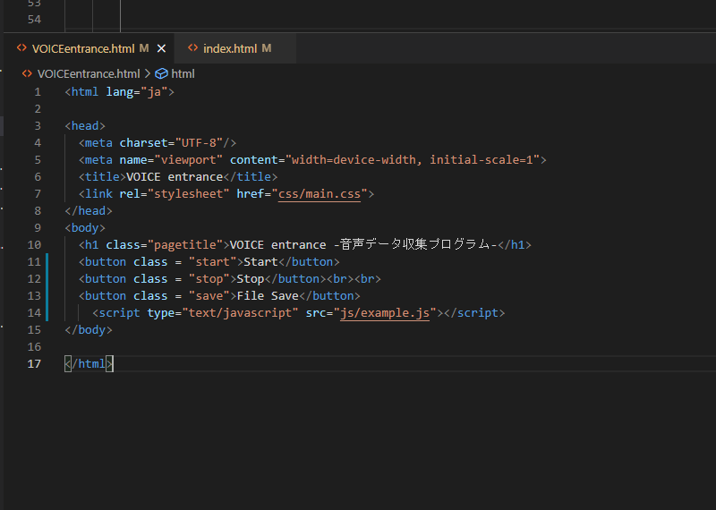

ブラウザ上での録音(2021/11/12)
●コードの内容(コメントアウトにて解説あり)
①html

②js
●出力結果
マイクの呼び出しに成功し、途中で止まっているわけではないが、blobに音声ストリームが保存されていないらしくシステム上で扱えない。
●次やること
・ブラウザの種類を変えたり、コード自体に穴がないか検証。
・子供の声の音声コーパスを見つけたので年齢推定の学習に使う。
●参考にしたサイト
・https://qiita.com/optimisuke/items/f1434d4a46afd667adc6
・https://developer.mozilla.org/ja/docs/Web/API/MediaDevices/getUserMedia
・https://developer.mozilla.org/ja/docs/Web/API/MediaRecorder
・https://developer.mozilla.org/ja/docs/Web/API/Blob
・https://developer.mozilla.org/ja/docs/Web/API/MediaRecorder/ondataavailable
・https://developer.mozilla.org/ja/docs/Web/API/Document/querySelector
・https://postd.cc/easy-audio-capture-with-the-mediarecorder-api/
本日の投稿はここまで。ありがとうございました。